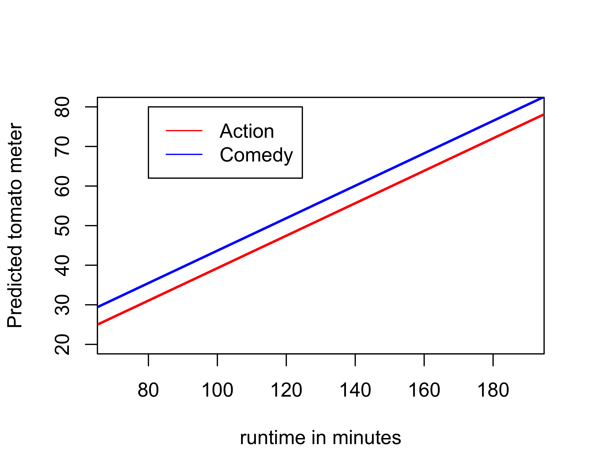
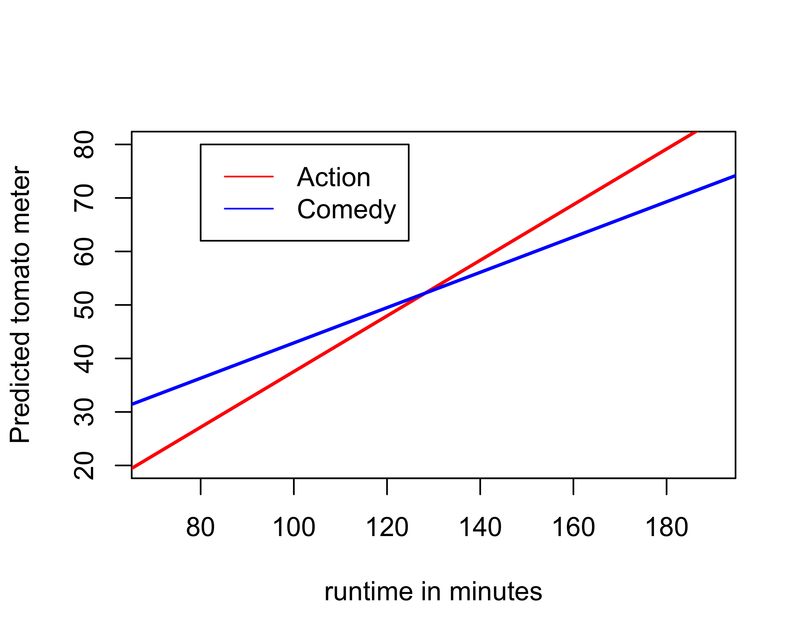
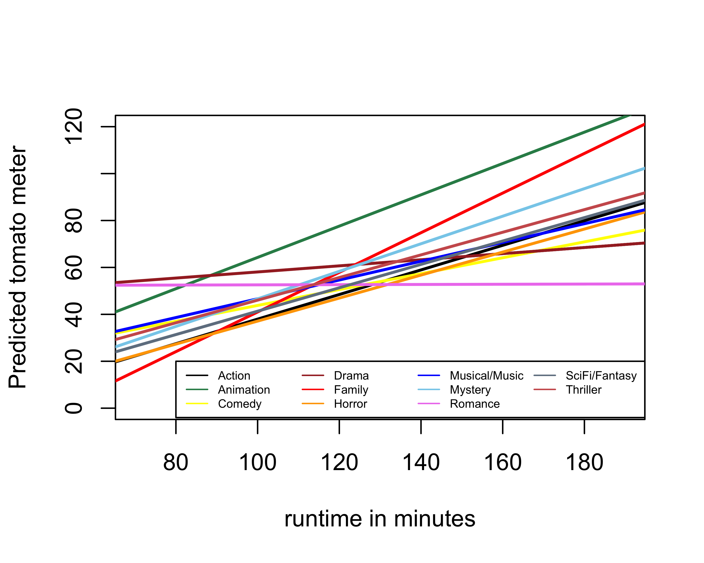

Interaction Terms
By definition, a linear model is an additive model. As you increase or decrease the value of one independent variable you increase or decrease the predicted value of the dependent variable by a set amount, regardless of the other values of the independent variable. This is an assumption built into the linear model by its additive form, and it may misrepresent some relationships where independent variables interact with one another to produce more complicated effects. In particular, in this section, we want to know whether the effect (i.e. the slope) of one independent variable varies by the value of another independent variable.
The nature of additive models
As an example for this section, I am going to look at the relationship between movie genre, runtime, and tomato meter ratings. To simplify things, I am going to only look at these relationships for two genres: action and comedy. I can limit my movies dataset to these two genres with the following command:
movies.short <- subset(movies, Genre=="Comedy" | movies$Genre=="Action")Now lets look at a simple model where genre and runtime both predict Tomato Meter ratings.
round(coef(lm(TomatoMeter~Genre+Runtime, data=movies.short)),2)## (Intercept) GenreComedy Runtime
## -1.75 4.43 0.41Genre is a categorical variable and action movies are set as the reference category. In equation form, the model looks like:
\[\hat{meter}_i=-1.75+4.43(comedy_i)+0.31(runtime_i)\]
I can interpret my slopes as follows:
- The model predicts that when comparing movies of the same runtime, comedies have Tomato Meter ratings 4.43 percentage points higher than action movies, on average.
- The model predicts that, holding constant movie genre, a one minute increase in movie runtime is associated with a 0.31 percentage point increase in the Tomato Meter rating, on average.
This is an additive model. If we move from an action movie to a comedy of the same runtime, our predicted Tomato Meter rating goes up by 4.43, regardless of the actual value of runtime. If we increase movie runtime by one minute while keeping genre the same, our predicted Tomato Meter rating goes up by 0.41, regardless of whether that genre is action or comedy.
It may help to graphically visualize the nature of this additive relationship. We can do this by plotting lines showing the relationship between runtime and Tomato Meter ratings separately for our two different genres of action and comedy. The line for action movies is given by:
\[\hat{meter}_i=-1.75+4.43(0)+0.41(runtime_i)=-1.75+0.41(runtime_i)\]
The line for comedy movies is given by:
\[\hat{meter}_i=-1.75+4.43(1)+0.41(runtime_i)=2.68+0.41(runtime_i)\]
Each line has an intercept and a slope. Notice that the intercepts are different but the slopes are the same. That means we have two parallel lines at different levels. You can see this easily by graphing the lines out:

The parallel lines are an assumption of the OLS regression model structure we have used. There are two consequences of this assumption. First, At every single level of runtime, the predicted Tomato Meter difference between comedy and action movies is exactly 4.62. This can be seen on the graph by the consistent gap between the blue and red line. Second, the effect of runtime on the Tomato Meter rating is assumed to be the same for action and comedy movies. This can be seen on the graph by the fact that both lines have the exact same slope.
Although these may seem like two different issues, they are really the same issue from different perspectives. If we were to allow the slopes of the blue and red line to be different, then the gap between them would not be static. The questions is how can we allow the slopes of the two lines to be different. This is where the concept of the interaction term comes in.
The interaction term
An interaction term is a variable that is constructed from two other variables by multiplying those two variables together. In our case, we can easily construct an interaction term as follows:
movies.short$comedy <- movies.short$Genre=="Comedy"
movies.short$interaction <- movies.short$Runtime*movies.short$comedyIn this case, I had to create a real indicator variable for comedy before I could multiply them, but then I just multiply this indicator variable by movie runtime. Now lets add this interaction term to the model:
model <- lm(TomatoMeter~Runtime+comedy+interaction, data=movies.short)
round(coef(model), 2)## (Intercept) Runtime comedyTRUE interaction
## -14.45 0.52 24.36 -0.19We now have an additional “slope” for the interaction term. Lets write this model out in equation form to try to figure out what is going on here.
\[\hat{meter}_i=-14.45+24.36(comedy_i)+0.52(runtime_i)-0.19(runtime_i*comedy_i)\]
Remember that the interaction term is just a literal multiplication of the two other variables. To figure out how this all works, lets once again separate this into two lines predicting Tomato Meter by runtime, for comedies and action movies separately.
For action movies, the equation is:
\[\hat{meter}_i=-14.45+24.36(0)+0.52(runtime_i)-0.19(runtime_i*0)=-14.45+0.52(runtime_i)\]
For comedy movies, the equation is:
\[\hat{meter}_i=-14.45+24.36(1)+0.52(runtime_i)-0.19(runtime_i*1)=(-14.45+24.36)+(0.52-0.19)(runtime_i)=9.91+0.33(run_i)\]
We now have two lines with different intercept and different slopes. The interaction term has allowed the effect of runtime on the Tomato Meter to vary by type of genre. In this case, the interaction term tells us how much smaller the slope is for comedy movies than for action movies. We can also just plot the lines to see how it looks:

The pattern here is fairly clear. Short comedies get better ratings than short action movies, while long comedies get worse ratings than long action movies. Put another way, comedies get less “return” in terms of their ratings when increasing their length than do action movies. This can be seen by the much steeper slope for action movies.
Interpreting interaction terms
Interpreting interaction terms can be tricky, because the inclusion of an interaction term also changes the meaning of other slopes in the model. The slopes for the two variables that make up the interaction term are called the main effects. In our example, those two variables are runtime and the comedy indicator variable and the main effects of these variables are 0.52 and 24.36, respectively. The most important rule to remember is that when an interaction term is in a model, the main effects are only the expected effects when the other variable involved in the interaction is zero. This is because the interaction implies that the effects of the two variables are not constant but rather change depending on the value of the other variable in the interaction term. Therefore, we can only interpret effects at a particular value of the other variable. So I would interpret these main effects as follows:
- The model predicts that among action movies, a one minute increase in movie runtime is associated with a 0.52 point increase in the Tomato Meter rating, on average.
- The model predicts that among movies with zero minutes of runtime (outside the scope of data of course), comedies are predicted to have Tomato Meter ratings 24.36 points higher than action movies, on average.
Notice that I did not have to say I was controlling for the other variable. I am doing more than controlling when I include an interaction term. I am conditioning the effect of one variable on the value of another. That is why I instead use the phrase “among observations that are zero on the other variable.” Note that you could also include other non-interacted variables in this model as well, like maturity rating, in which case you would also need to indicate that you controlled for those variables.
Interpreting interaction terms themselves can also be tricky because they are the difference in the effect of on variable depending on the value of another. One approach is to interpret this difference in effect directly. In this case, we would say:
- The model predicts that the predicted increase in Tomato Meter ratings for a one minute increase in movie runtime is 0.19 points smaller for comedy movies than for action movies, on average.
You have to be careful with this type of interpretation. In this case, both slopes were still positive so I can talk about how the effect was smaller. However, in some cases, the slopes may end up in different directions entirely which would require a somewhat different interpretation. Another approach is to actually calculate the slope for the indicated category (comedies) and interpret it directly:
- The model predicts that among comedy movies, a one minute increase in movie runtime is associated with a 0.33 increase in the Tomato Meter rating, on average (which is lower than for action movies).
In short, you have to be careful and thoughtful when thinking about how to interpret interaction terms.
Interaction terms in R
In the example above, I created the interaction term manually, but I didn’t actually need to do this. R has a shortcut method for calculating interaction terms:
model <- lm(TomatoMeter~Runtime*Genre, data=movies.short)
round(coef(model),2)## (Intercept) Runtime GenreComedy
## -14.45 0.52 24.36
## Runtime:GenreComedy
## -0.19The results are exactly the same as before. To include an interaction term between two variables I just have to connect them with a * rather than a + in the lm formula. By default, R will include each variable separately as well as their interaction.
Interaction terms with multiple categories
In the above example, I only compared comedy and action movies in order to keep the comparison simple, but it is possible to run the same analysis on the full movie dataset to see how runtime varies across all genres.
model <- lm(TomatoMeter~Runtime*Genre, data=movies)
round(coef(model),2)## (Intercept) Runtime
## -14.45 0.52
## GenreAnimation GenreComedy
## 11.96 24.36
## GenreDrama GenreFamily
## 59.50 -29.06
## GenreHorror GenreMusical/Music
## 2.51 21.07
## GenreMystery GenreRomance
## 2.30 66.59
## GenreSciFi/Fantasy GenreThriller
## 5.92 12.26
## Runtime:GenreAnimation Runtime:GenreComedy
## 0.14 -0.19
## Runtime:GenreDrama Runtime:GenreFamily
## -0.39 0.32
## Runtime:GenreHorror Runtime:GenreMusical/Music
## -0.03 -0.12
## Runtime:GenreMystery Runtime:GenreRomance
## 0.06 -0.52
## Runtime:GenreSciFi/Fantasy Runtime:GenreThriller
## -0.03 -0.04Thats a lot of numbers! There is a slope for each genre except action (10 in all) and an interaction between runtime and each genre except action (another 10 in all). What we are estimating here are 11 different lines (on for each genre) for the relationship between runtime and Tomato Meter rating. Because action movies are the reference, the main effect of runtime is the slope for action movies (0.52). The interaction terms show us how much larger or smaller the effect of runtime is for each given genre. So the effect is 0.39 smaller for dramas for a total effect of 0.13 (0.52-0.39). It is 0.32 larger for family movies for a total effect of 0.84 (0.52+0.32), and so forth. Similarly, the intercept is the intercept only for action movies. To get the intercept for other genres, we take the intercept value itself and add the main effect of genre. So for dramas the intercept is -14.45+59.5=45.05 and for family movies it is -14.45-29.06=-43.51. If we put all these slopes and intercepts together, we will get 11 lines like so:

There is a lot going on here, but we can detect some interesting patterns. Almost all of the lines are positive indicating that longer movies tend to generally get better ratings. This is not true of Romances however, where there is a slight negative relationship between movie runtime and Tomato Meter ratings. Dramas also have a fairly flat slope and a high intercept, so they tend to outperform most other short movies but don’t fare as well compared to other genres when they are longer. The steepest slope is for family movies, which apparently are horrible when short (think “Beethoven 6: Beethoven saves Christmas, again” or something), but do much better when longer (although I can’t think of many examples here). SciFi/Fantasy movies have the highest ratings at every single runtime, although they don’t get quite as much return from runtime as family movies.
Interaction terms with two categorical variables
The examples so far have involved interacting a quantitative variable with a categorical variable which gives you a different line for each category of your categorical variable. However, we can also create an interaction term between two categorical variables.
As an example, lets look at differences in income in the politics dataset by race and education. To simplify things, I am going to dichotimize race into white/non-white and education into less than college/college or more, as follows:
politics$nwhite <- politics$race!="White"
politics$college <- as.numeric(politics$educ)>3Lets look at the mean income across these combination of categories:
tapply(politics$income, politics[,c("nwhite","college")], mean)## college
## nwhite FALSE TRUE
## FALSE 59.44806 102.9907
## TRUE 43.81107 97.2459White college graduates make $103K, on average, while non-white college graduates make $96K, on average. Whites without a college degree make $59K, on average, while non-whites without a college degree make $43K, on average. If we put this in a table, I can show that there are four different ways to make comparisons between these numbers.
| No degree | College degree | Difference | |
|---|---|---|---|
| White | 59.4 | 103 | 43.6 |
| Non-white | 43.8 | 97.2 | 53.4 |
| Difference | -15.6 | -5.8 | 9.8 |
If we look at the two differences along the far-right column, we are seeing the “returns” in terms of income for a college degree separately for whites and non-whites. The return for whites is $43.4K and the return for non-whites is higher at $52K. if we look at the differences along the bottom row, we are seeing the racial inequality in income separately for those with no degree and those with a college degree. Among those with no college degree, non-whites make $15.9K less than whites. Among those with a college degree, non-whites make $7.3K less than whites. The racial gap in income gets smaller at the higher level of education.
Now lets look at the difference in the differences. For the racial gap in income this is given by -7.3-(-15.9)=8.6. For the returns to a college degree this is given by 52-43.4=-8.6. The difference in the differences is the same! This is because we are looking at the same relationship in two different ways. If non-whites get a better return to college than whites, then the racial gap in income must get smaller among the college-educated. Similarly, if the racial gap in income gets smaller at the college level, it tells us that non-whites must get a better return on their college education.
This 8.6 number is basically an interaction term. We can interpret the number as the difference in returns to income from a college degree between whites and non-whites. Alternatively, we can interpret the number as the difference in the racial income gap between those with no degree and those with a college degree. Either way, we have the same information, with the same finding: greater educational attainment reduces racial inequality because minorities get greater return on their college degrees.
Lets try modeling this relationship with an OLS regression model. First lets try a model without interaction terms:
model <- lm(income~nwhite+college, data=politics)
coef(model)## (Intercept) nwhiteTRUE collegeTRUE
## 58.37914 -12.31446 46.06442Lets put this into an equation framework:
\[\hat{income}_i=58.5-13.0(nwhite_i)+45.6(college_i)\]
We can use this equation to fill in the predicted valued of the same table we calculated by hand above:
| No degree | College degree | Difference | |
|---|---|---|---|
| White | 58.5 | 58.5+45.6=104.1 | 45.6 |
| Non-white | 58.5-13.0=45.5 | 58.5-13+45.6=91.1 | 45.6 |
| Difference | -13 | -13 | 0 |
The predicted values do not match the exact values above. More importantly, if you look at the differences, you can see that the returns to education are assumed to be identical for whites and non-whites (45.6) and the racial gap is assumed to be the same for those with no degree and those with a college degree (-13). This is the limitation of the additive model. We assume that the effects of race and college completion are not affected by each other. If we want to determine whether returns to college are different by race, we need to model the interaction term, as follows:
model <- lm(income~nwhite*college, data=politics)
coef(model)## (Intercept) nwhiteTRUE collegeTRUE
## 59.44806 -15.63699 43.54263
## nwhiteTRUE:collegeTRUE
## 9.89220In equation form:
\[\hat{income}_i=59.4-15.9(nwhite_i)+43.4(college_i)+8.6(nwhite_i*college_i)\]
Lets use this model to get predicted values in our table:
| No degree | College degree | Difference | |
|---|---|---|---|
| White | 59.4 | 59.4+43.4=102.8 | 43.4 |
| Non-white | 59.4-15.9=43.5 | 59.4-15.9+43.4+8.6=95.5 | 52 |
| Difference | -15.9 | -7.3 | 8.6 |
Our model now fits the data exactly and the differences are allowed to vary by the other category, so that we can see the differences in returns to college by race and the differences in the racial gap by education level. The interaction term itself of 8.6 is basically the same to what we calculated by hand.
If we were to interpret the intercept and slopes from the model above, we would say:
- Whites with no college degree had a mean income of $59,400.
- Among those with no college degree, non-whites earn $15,900 less than whites, on average.
- Among whites, those with a college degree have incomes $43,400 higher on average than those without a college degree.
- The returns to income from a college degree are $8,600 larger for non-whites than they are for whites, on average.